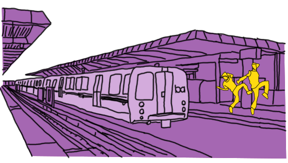
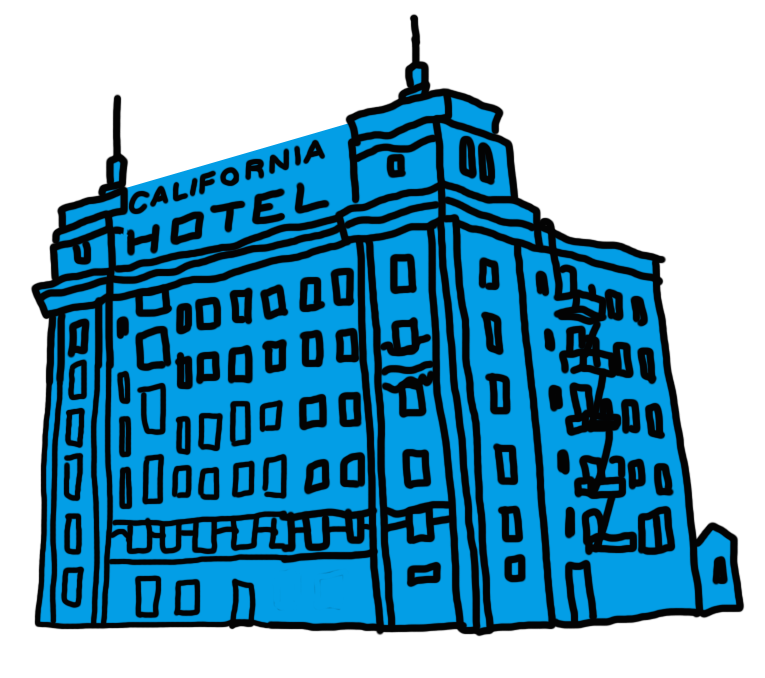
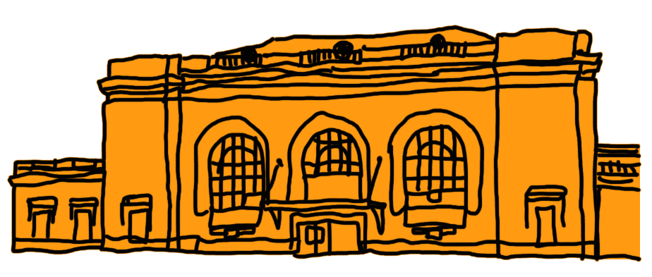
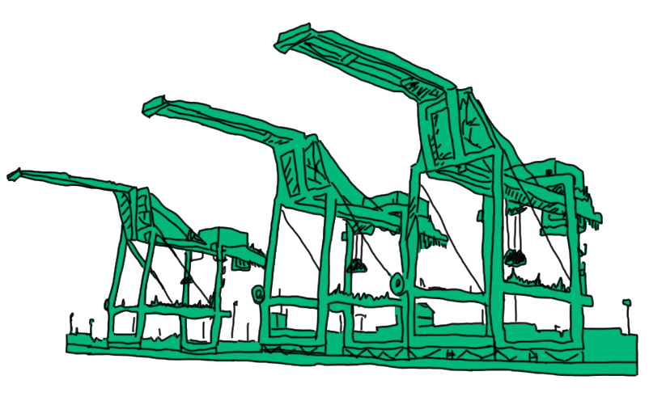
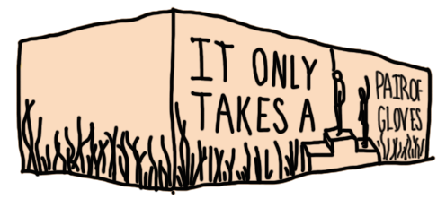
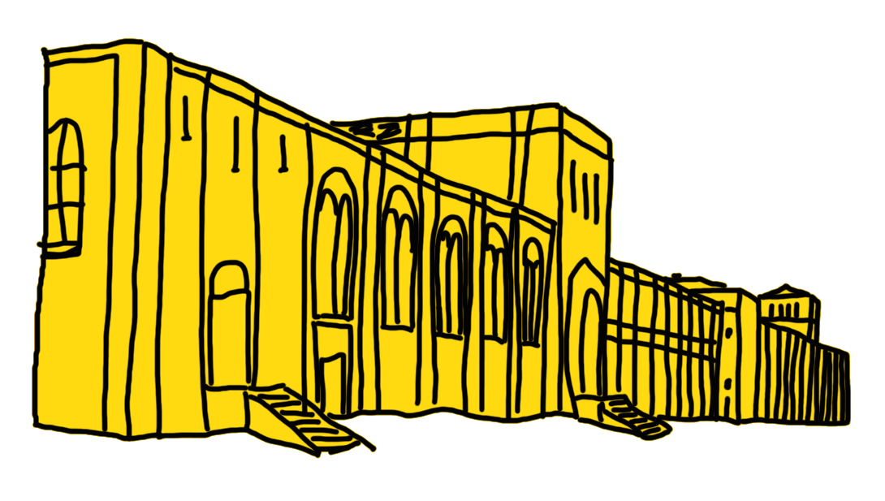

West Side Stories
Gentrification in West Oakland
We tend to talk about gentrification as one story: newcomers displace long-time residents, erasing history and disrupting culture in the process. But living through dramatic neighborhood change always brings up many stories. Those stories--from West Oakland's people and places--are what this interactive is all about.
There's a lot to disagree about, when it comes to gentrification. But one thing seems beyond debate. If you're new to a place, it's good to know a thing or two about its history. So West Oakland's proud past is one of the most important stories you'll learn about in West Side Stories.
scroll
West Oakland Bart Station
Turf dancing is a form of American street dance that is said to have originated in Oakland, California. According to locals, credit for the term goes to dancer Jeriel Bey, who created it as an acronym for Taking Up Room on the Floor. Prior names for the dance form, like "having fun with it" or "hitting it" didn't seem as marketable. Dance elements include popping, locking, and miming. Others say that the term turf dancing branced from breakdancing as a way to represent where dancers were from (the same as 'blocks' or 'sets') through dance. If you ride through the West Oakland BART station, you just might encounter a Turf dancer, making the most of the crowded train as a moving stage.
Hotel California
Built in the 1920s, the California Hotel was once a place that welcomed African American artists and musicians when they were discriminated against elsewhere. Then, somewhere around the 1970s--you know what was going on around that time--the neighborhood started to deteriorate. The hotel ran into financial trouble and eventually closed. Fast forward to 2011: the East Bay Asian Local Development Corporation and other supporters pulled together funds for a major renovation. Now, the California Hotel provides 137 units of low-income housing and even has a rooftop garden.
Malik

22-year old Malik Byers grew up in West Oakland, but his family had to move away. He reflects on how his old neighborhood has changed in his absence.
16th Street Station
Built in 1912 and no longer in active use, the 16th Street station was once part of Southern Pacific, among the leading employers in Oakland. In its heyday, the station was arguably the largest transportation hub in Oakland and housed the West Coast branch of the very first African American Labor Union in America. It was the last stop for many African Americans leaving the South, making this station known for the second great migration. The station, like many others, went out of business with the transition to private transportation. It is now owned by an affordable housing non-profit with ambitious plans for restoration, and occasionally used for events like haunted houses and film shoots.
Miss Cookie

Joyce Elaine Carter aka "Miss Cookie" has lived in her house in West Oakland for 37 years. And she says she's not going anywhere.
The Port
The Port of Oakland spans 20 miles of waterfront, from the Bay Bridge through Oakland International Airport. Global trade through the port is valued at $40 billion a year. The port supports about 73,000 jobs in the San Francisco Bay Area.
Kevin

Kevin Sosa, 19, lives in West Oakland's Lower Bottoms. While he has seen many of his old neighbors move away, he says his mom's job has allowed his family to stay.
DeFremery Park
DeFremery Park is named after James DeFremery, who was the founder of the Savings Union Bank of San Francisco (the institution that became Wells Fargo). DeFremery was where the Black Panther Party housed key social services and political activities, and the park was a distribution site for free food and sickle-cell anema testing. With its landmark Victorian house, DeFremery is now a gathering place for West Oakland residents and families, who get together there for community events and rallies, exercise, fundraisers, classes, and celebrations.
Ericka Huggins is a professor of sociology and women's studies, and the former director of the Black Panther Party's Oakland Community School. She joined the BPP as a teenager in 1967.
The Open House

A rental housing advisor considers buying a fixer-upper in West Oakland.
A couple from San Francisco attends a West Oakland open house, looking for a neighborhood with a little more "flavor."
A housebuyer from a different neighborhood in Oakland looks to the West for a home that will appreciate in value.
A couple that wants to stay in the East Bay checks out an open house in West Oakland for an affordable place to raise their future family.
The Mural
U.S. Olympic sprinters Tommie Smith and John Carlos, gold and bronze medalists in the 200 meter, stood at the medal podium during the 1968 Summer Games in Mexico City, bowed their heads and held a black-gloved hand raised as the American National Anthem played during the victory ceremony. This was a mural commemorating this historic Olympic event, with images of the athletes and the phrase, "It only takes a pair of gloves." If you happen to pass by, you will notice the building and mural have been bulldozed, as part of West Oakland redevelopment plans.
McClymonds High School
McClymonds High School, opened in 1915, is the third oldest school in Oakland and currently the only high school in West Oakland operating under the rules and regulations of the Oakland Unified School District. After an experiment with a Small Schools model, in 2010, McClymonds reconstituted as a comprehensive high school once again, with mostly new staff and teachers. The school has been known for its athletic programs. A few famous alumni from McClymonds are Ron Dellums, MC Hammer, and Bill Russell.
Joshua

21-year-old Joshua Clayton grew up on 12th Street in West Oakland's Lower Bottoms. He says his block's community is so tight, it can feel like both a trap and a safety net.
The Team

West Side Stories is a project of Youth Radio Interactive, a production company in downtown Oakland where young people collaborate with professional developers to create dynamic stories like this one.
The Youth Team
Senay Alkebulan
Maya Escobar
Isabella Ordaz

Donta Jackson
Storm White
Ali Arbreton
The Staff
Asha Richardson
Project Manager
Lo Benichou
Interactive News Developer
Teresa Chin
Producer and Designer